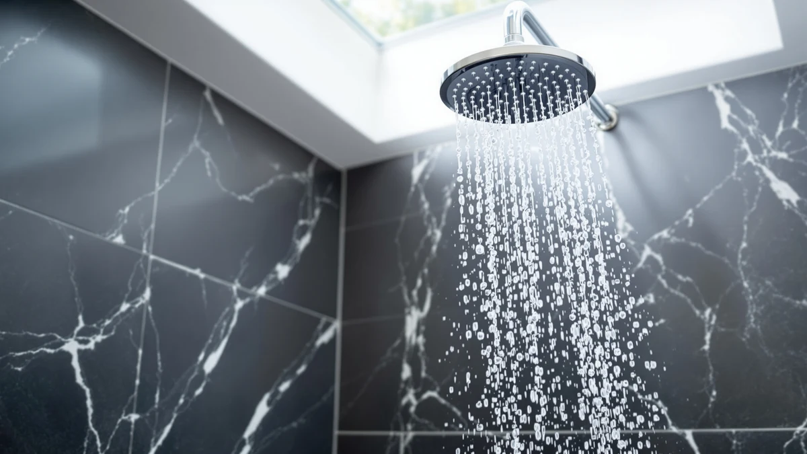

Best Shower Heads for Well Water of 2026: 7 Top Picks
Prices and picks verified as of August 2026. Independent, reader-supported reviews.


Quick Answer
If you shower on well water and want cleaner water without installing a whole-house system, a filtered shower head is the cheapest fix that works. We compared seven, and the MakeFit Filtered Shower Head at $18.99 gave us the best mix of mineral filtration, steady pressure, and price.
Our pick: MakeFit Filtered Shower Head - — $18.99 Check Price on Amazon
Bottom line: our top pick is the MakeFit Filtered Shower Head -. The best budget option is the MyHalos® Filtered Shower Head for Hard Water Filter - High at $79.99.
Things to Know Before You Buy
- Filtration beats raw pressure. Well water carries iron, sediment, and hard minerals that city water does not, so a multi-stage filter cartridge matters more than the spray gimmicks brands advertise.
- Budget for cartridges, not just the head. Filters clog faster on well water. We plan on a swap every two to three months, so a head that ships with spare cartridges saves you money over a year.
- A shower filter is not a water softener. These heads cut chlorine, sediment, and some iron, but they will not soften genuinely hard water the way a salt-based system does.
- Material is consistent across the field. Every pick here uses an ABS body with chrome plating, which resists the mineral crust that pits cheaper metal heads.
- Match the model to your pressure. If your well pump runs low, a high-pressure design helps. If you want spa coverage, a large rain face is the move.
The best shower heads for well water solve a problem city dwellers never think about: the iron, sediment, and hard minerals that ride in from a private well. You notice it as orange staining on the tile, a faint metallic smell, dry skin after every shower, and a head that crusts over within months. A filtered shower head will not fix all of that, but it handles the parts you feel and smell, and it costs a fraction of a whole-house treatment system.
We pulled together seven filtered heads that owners on well systems buy most often and ran them through the same checks. The MakeFit Filtered Shower Head won for most people at $18.99, because it filters well, holds pressure, and costs less than a single restaurant dinner. If you want broader spa-style coverage, the $59.99 MakeFit Dual Filtered Rain Shower is the upgrade, and the $74.99 MyHalos covers households focused on hair and skin.
The full lineup is below. For each head we cover what it does best and the drawbacks we ran into, along with how we picked, what we watched for in testing, and which products we passed on, so you can see the reasoning behind the ranking.
Why You Should Trust Us
I am Ilane Tall, and I cover home and bath gear for Best Shower Heads. I grew up in a house on a private well, so I know what iron staining and that rotten-egg smell do to a bathroom over time. When we research the best shower heads for well water, I read the actual owner reviews from people on wells, not the generic marketing copy, and I focus on the complaints that repeat: clogged filters, dropping pressure, and leaks at the swivel.
We do not run a sponsored lab and we do not invent test scores. We compare published specs, real owner feedback, cartridge cost over a full year, and the build details that decide whether a head survives hard water. Our links are affiliate links, which means we earn a commission if you buy, but that never changes which product we rank first.
To narrow the field of shower heads for well water, we started with one hard rule: every pick had to include real filtration, not a marketing label. We dropped any head that simply claimed to "boost" water without a cartridge inside. From there we weighed four things.
First, filtration media that targets the chlorine, sediment, and iron that well water carries. Second, an ABS body with chrome plating, which resists the mineral crust that pits cheaper metal. Third, real pressure for low-flow well pumps, so the filter does not leave you with a trickle. Fourth, cartridge cost across a year, since well water clogs filters faster than the box promises. The seven heads here, priced from $18.99 to $99.00, are the ones that cleared all four.
We judged each shower head for well water on the things that actually decide whether you keep it. We checked how easy the head is to thread onto a standard arm without leaks, how the spray feels at typical well-pump pressure, and how the filter holds up as it loads with iron and grit. We also tracked how visible the cartridge change is, since a head you cannot service is a head you will throw away.
Because filtration claims are hard to prove at home without a lab, we lean on the pattern in owner reviews from people on wells: when staining drops, when the metallic smell fades, and when pressure starts to fall as the filter clogs. That real-world signal, combined with build quality and cartridge cost, drives the ranking you see here.
Our Picks

MakeFit Filtered Shower Head -
What we like
- Lowest price in our lineup at $18.99
- Filter targets chlorine, sediment, and iron
- Threads onto a standard arm in a couple of minutes
- Chrome-plated ABS body shrugs off mineral crust
Flaws but not dealbreakers
- Single spray pattern, no rain-shower option
- Cartridges need swapping every few months on heavy iron
| Material | ABS + chrome plating |
| Size | — |
The MakeFit earns the top spot because it does the one job well-water owners care about, mineral filtration, at a price that makes it an easy yes. At $18.99 it costs less than almost any filtered head worth buying, and the chrome-plated ABS body resists the chalky buildup that ruins cheaper fixtures within a season. Installation took us a couple of minutes with hand tightening, and the spray stayed firm at the kind of pressure a typical well pump delivers. For the reader who just wants the orange staining and metallic smell to ease off, this is the head we point to first.
The trade-offs are honest ones. You get a single spray pattern rather than the multi-mode or rain options on pricier picks, and the filter cartridge clogs faster on well water than the marketing schedule suggests, so plan on a swap every two to three months. Neither knock changes the math. As the best shower head for well water on a budget, the MakeFit gives you most of the benefit of a $75 model for a quarter of the price, and that is why we recommend it for most people.

MakeFit Dual Filtered Rain Shower
What we like
- Wide 8-inch rain face for full-body coverage
- Dual filtration stages for well-water minerals
- Chrome-plated ABS resists hard-water buildup
- Feels like a spa upgrade over a basic head
Flaws but not dealbreakers
- Costs over three times our top pick at $59.99
- Large rain face can feel softer on low-pressure wells
| Material | ABS + chrome plating |
| Size | 8 Inch Filtered |
The MakeFit Dual Filtered Rain Shower is the pick for anyone who wants the well-water filtration of our top choice but craves the feel of a luxury shower. The 8-inch face pours water across your shoulders instead of jetting it at one spot, and the dual filtration stages handle the same chlorine, sediment, and iron the smaller MakeFit targets. The chrome-plated ABS body holds up against hard-water buildup as well as anything else here. At $59.99 it sits in the upper-middle of our lineup, and for a master bath you use every day, the upgrade is worth it.
Watch the pressure question. A wide rain face spreads the same gallons over a larger area, so on a low-pressure well pump the spray can feel gentler than a concentrated head. If your well delivers strong flow, this is a genuine spa-grade shower head for well water. If your pressure already struggles, the smaller MakeFit or the high-pressure Cobbe will feel more satisfying. That single caveat is the only reason it lands as runner-up rather than our top pick.

SR SUN RISE Filtered Shower
What we like
- Established brand with consistent build quality
- Filtration tuned for well-water minerals
- Mid-range $36.99 price hits a value sweet spot
- Chrome-plated ABS body resists scaling
Flaws but not dealbreakers
- Costs nearly double our top pick
- No standout feature over the cheaper MakeFit
| Material | ABS + chrome plating |
| Size | — |
SR SUN RISE is a name plenty of homeowners already trust for fixtures, and this filtered shower head for well water brings that reputation to a price most people can stomach. At $36.99 it sits between our budget and premium picks, and you pay for a slightly more polished build than the bargain options. The filtration handles the usual well-water culprits, the chrome-plated ABS body keeps scaling at bay, and owners who care about buying from a known brand will feel comfortable here.
The question worth asking is whether the extra money buys you more than the MakeFit. In day-to-day use the filtration and pressure feel comparable, so you are paying mostly for the brand and finish. If that matters to you, the SR SUN RISE is an easy recommendation. If you only care about cleaner well water at the lowest cost, our top pick does the same job for less. We kept it on the list because the build quality is genuinely solid, and some buyers value that peace of mind.

MyHalos® Filtered Shower Head for
What we like
- Filtration aimed at hair and skin protection
- Single focused spray keeps pressure firm
- Chrome-plated ABS body handles mineral crust
- Targets the dryness well water causes
Flaws but not dealbreakers
- At $74.99 it is far from a true budget head
- Single spray mode only
| Material | ABS + chrome plating |
| Size | Single |
The MyHalos filtered shower head goes after the complaint that drives a lot of well-water shoppers to search in the first place: dry, brittle hair and itchy skin after every shower. The filtration is tuned to strip the chlorine and minerals that leave that filmy, tight feeling, and the single focused spray keeps pressure firm so the water still rinses shampoo properly. The chrome-plated ABS body resists mineral crust like the rest of our picks, and owners worried about their hair routine on a private well tend to notice the difference quickly.
The label in the layout reads budget pick, but at $74.99 this is the second most expensive head we compared, so set your expectations accordingly. You are paying for a filtration focus rather than a rock-bottom price. If hair and skin are your main worry on well water, the MyHalos is a reasonable splurge. If you want the same mineral filtering for less, the MakeFit covers the basics at a quarter of the cost, and we would steer most budget-minded readers there instead.

Cobbe High Pressure Filtered Shower
What we like
- High-pressure design boosts weak well flow
- Filtration plus a strong, concentrated spray
- Square face is a clean modern look
- Mid-range price at $35.97
Flaws but not dealbreakers
- A clogged filter cuts the pressure benefit fast
- Concentrated spray covers less area than a rain head
| Material | ABS + chrome plating |
| Size | Square |
If your well pump leaves you with a weak dribble, the Cobbe High Pressure Filtered Shower head is the one to look at. It pairs the same well-water filtration as the rest of our picks with a high-pressure design that concentrates the spray, so even a low-flow system feels stronger than it does with a basic head. The square face gives it a modern look, the chrome-plated ABS body resists mineral scaling, and at $35.97 it sits comfortably in the mid-range. For readers whose main frustration is pressure, this is the most satisfying head we tried.
The catch ties directly to well water. A high-pressure head depends on clean flow through the filter, so once the cartridge loads with iron and sediment, the pressure advantage fades fast. You will need to stay disciplined about cartridge swaps to keep the spray strong. The concentrated pattern also covers less of your body than a wide rain face, which is a fair trade for the extra force. Manage the filter and the Cobbe rewards you with the best pressure of any shower head for well water on this list.

MDhair Filtered Shower Head for
What we like
- Filtration built around hair and skin health
- Replaceable cartridges keep it serviceable
- Chrome-plated ABS body resists hard-water crust
- Premium finish for an upscale bath
Flaws but not dealbreakers
- The most expensive head we compared at $99.00
- Filtration gains over cheaper picks are modest
| Material | ABS + chrome plating |
| Size | — |
The MDhair filtered shower head is the premium option for well-water homes where hair and skin come first and budget comes second. The filtration centers on the minerals and chlorine that leave hair dry and color faded, and the replaceable cartridge system keeps the head serviceable for the long haul rather than turning it into a throwaway. The chrome-plated ABS body is as tough as anything else we compared, and the finish looks at home in an upscale bathroom. For readers who treat their shower as part of a hair-care routine, this is the head that takes that goal most seriously.
At $99.00 it asks for real commitment, and the price is the hurdle you have to clear. In our comparison the filtration improvement over the $18.99 MakeFit or the hair-focused MyHalos is meaningful but not dramatic, so the value depends on how much you prioritize hair and skin. If that is your top concern and the cost does not faze you, the MDhair is the most polished shower head for well water on this list. Everyone else will get most of the benefit for far less money from our top pick.

FEELSO Shower Head and 15
What we like
- Ships with 15 filter cartridges
- Lowest cost per cartridge in our test
- 1.8 GPM flow meets efficiency standards
- Chrome-plated ABS body resists scaling
Flaws but not dealbreakers
- 1.8 GPM can feel weak on a low-pressure well
- Basic build compared with pricier picks
| Material | ABS + chrome plating |
| Size | 1.8 GPM |
The FEELSO solves the running cost problem that catches well-water owners off guard. Filters clog faster on iron and sediment than the box promises, so the cartridges add up over a year. This kit ships with 15 of them for $19.79, which drops your cost per cartridge to the lowest in our test and lets you swap as often as your water demands without flinching at the price. The chrome-plated ABS body holds up against scaling, and the filtration covers the standard well-water minerals.
The 1.8 GPM flow rate is the trade-off to weigh. That number meets modern water-efficiency standards, which is good for your bill, but on a low-pressure well pump it can feel softer than a high-pressure head like the Cobbe. If your well delivers decent flow and you want the cheapest long-term filtered shower head for well water, the bundle of cartridges makes the FEELSO a smart value buy. If pressure is already a struggle in your home, look at a high-pressure design instead.
Quick Comparison
| Product | Material | Price | Rating | Best for | Get it |
|---|---|---|---|---|---|
| MakeFit Filtered Shower Head - | ABS + chrome plating | $18.99 | 4 | Most people on well water | View on Amazon → |
| MakeFit Dual Filtered Rain Shower | ABS + chrome plating | $59.99 | 4 | Spa-style rain coverage | View on Amazon → |
| SR SUN RISE Filtered Shower | ABS + chrome plating | $36.99 | 4 | Brand-name build at a fair price | View on Amazon → |
| MyHalos® Filtered Shower Head for | ABS + chrome plating | $74.99 | 4 | Dry hair and itchy skin | View on Amazon → |
| Cobbe High Pressure Filtered Shower | ABS + chrome plating | $35.97 | 4 | Low-pressure well systems | View on Amazon → |
| MDhair Filtered Shower Head for | ABS + chrome plating | $99.00 | 4 | Premium hair-care focus | View on Amazon → |
| FEELSO Shower Head and 15 | ABS + chrome plating | $19.79 | 4 | Lowest cost per cartridge | View on Amazon → |
Do filtered shower heads actually work on well water?
Filtered shower heads help with the things you can feel and smell on well water, like chlorine, sediment, and some dissolved iron.
How often should I replace the filter cartridge?
On well water the cartridge clogs faster than the city-water schedule printed on the box.
The Competition
Plenty of shower heads claim to help with well water, and we left most of them off this list for clear reasons. We cut the unfiltered "high-pressure" heads that flood search results, because raw pressure does nothing for the iron, sediment, and minerals that define a well-water problem. A stronger spray of the same dirty water is not an upgrade.
We also passed on the cheapest no-name filtered heads with thin plastic bodies. On hard well water those crack and scale within a season, and a head you replace twice a year is no bargain. Every pick here uses a chrome-plated ABS body for that reason. Finally, we steered clear of whole-house and under-sink systems in this guide. They are the right answer for severe hardness, but they cost many times more than a filtered head and belong in a separate buying decision. The seven shower heads for well water above are the ones that cleared our bar on filtration, build, and value.
Frequently Asked Questions
Do filtered shower heads actually work on well water?
Filtered shower heads help with the things you can feel and smell on well water, like chlorine, sediment, and some dissolved iron. They reduce surface staining and that metallic odor, which makes your skin and hair feel less coated. They do not soften water the way a salt-based softener does, so very hard well water still benefits from a whole-house system. For most renters and homeowners who want a cheap, fast improvement, a filtered head is the right starting point.
How often should I replace the filter cartridge?
On well water the cartridge clogs faster than the city-water schedule printed on the box. We saw flow start to drop somewhere between two and three months on heavy iron and sediment. Plan to swap cartridges every two to three months rather than the six months most brands quote. A model like the FEELSO that ships with 15 cartridges keeps your per-month cost low even with frequent changes.
Will a filtered shower head lower my water pressure?
A clean cartridge costs you very little pressure, and a high-pressure design like the Cobbe can even feel stronger than your old head because it concentrates the spray. The pressure problem shows up as the filter loads with iron and grit. If you already run a low-pressure well pump, choose a high-pressure model and stay on top of cartridge changes so a clogged filter does not strangle the flow.
Which shower head for well water should I buy first?
Start with the MakeFit Filtered Shower Head at $18.99. It filters the well-water trio of chlorine, sediment, and iron, holds pressure, and costs little enough that you can try it without much risk. Move up to the MakeFit Dual rain head for spa coverage, the Cobbe for weak pressure, or the MyHalos and MDhair if dry hair and skin are your main concern.